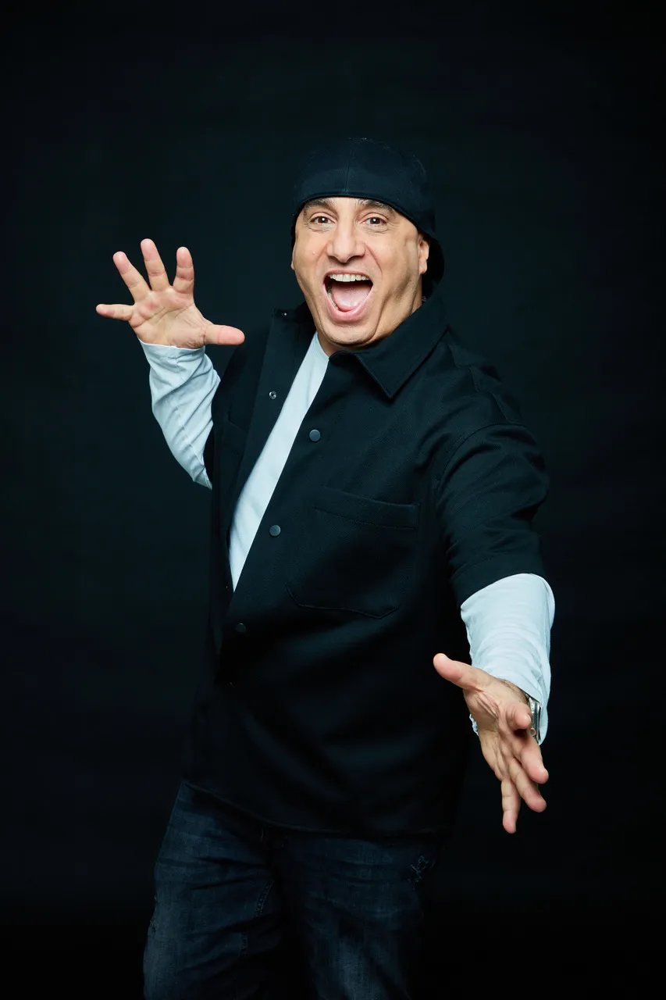

Aussi loin qu'il s'en souvienne, D'jal a toujours été heureux et servi par une imagination débordante, le tout couplé à un vrai sens du partage… Normal quand on est l'aîné d'une fratrie de 7 enfants !
À l'adolescence, le jeune homme se découvre une passion pour le cinéma grâce à une voisine qui lui fournit des quantités astronomiques de vidéocassettes. Des blockbusters aux films d'auteurs, il assure la promotion de ses coups de cœurs auprès de tout le quartier de sa banlieue parisienne, qui écoute dévotement les conseils de ce Pierre Tchernia de proximité. C'est aussi le début des premières sorties, des premiers kifs, des premiers drames. Faire le malin devient un kit de survie à usages multiples, qu'il s'agisse d'encaisser les taloches d'un père qui châtie trop à force d'aimer, d'embrasser la plus jolie fille du collège, d'apprivoiser les profs, d'honorer ceux qui sont partis trop tôt…
De petit boulot en petit boulot, D'jal atterrit dans un centre d'aide aux myopathes. Il s'attache à ces jeunes adultes dont il voit la vie s'écouler inéluctablement et les vanne sans vergogne parce qu'il sait comme il est bon de rire aux éclats même quand le souffle vous manque. D'jal noue une véritable amitié avec Lassana, un grand gaillard taciturne cloué dans son fauteuil roulant, que la maladie emportera trop vite.
S'il s'est pris pas mal de coups de pompes au derrière, c'est son premier coup de pompe à l'âme.
D'jal décide d'aller au bout de ses rêves, car la vie est courte. Et tout s'enchaine comme une évidence.
Celui dont le rêve de gosse était de devenir réalisateur découvre que la prestigieuse école de cinéma Louis Lumière se situe juste en face du foyer dans lequel il travaille depuis trois ans. Armé de son bagout, d'humour et d'une passion communicative, il réussit à mobiliser toute une équipe d'étudiants en cinéma et à monter des fonds afin de réaliser un court-métrage dont il rédige le scénario en une semaine.
D'jal prend alors conscience de sa capacité à raconter des histoires de façon drôle et décalée, se prend au jeu d'écrire des vannes n'importe où et n'importe quand, et l'idée de monter sur scène s'impose peu à peu dans son esprit. Il convainc alors le maire de sa ville de lui prêter les clés du théâtre municipal.
Écrire, se mettre en scène, répéter, rythme son quotidien pendant des mois. Puis c'est la première représentation devant les amis et la famille, un succès, le début du bouche-à-oreilles, et les représentations s'enchainent…
"D'jal décide d'aller au bout de ses rêves, car la vie est courte."
En parallèle, D'jal court les scènes ouvertes, il impose son style et son personnage déjà culte du "Portugais" (plus de 20 millions de vues !), avant d'exploser au Jamel Comedy Club. Puis il enchaine les représentations dans le monde entier : il tourne au Maghreb, en Afrique Noire (Maroc, Tunisie, Algérie, Liban, Sénégal, Mali, Niger, Côte d'Ivoire…), mais aussi à Londres avant de revenir en France.
Avec pour spécificité d'écrire et de proposer à chaque fois un spectacle unique, sur mesure, pour le public du pays qui le reçoit. Ce goût du défi de conquérir un auditoire à la culture différente, allié au plaisir de l'écriture, et à sa volonté de partager sa joie de vivre, son énergie débordante et son humour malicieux, font de D'jal un humoriste à part.
Aujourd'hui, après une tournée mondiale à guichets fermés — Trévise, Olympia, Alhambra, Casino de Paris — D'JAL repart sur les routes avec son nouveau spectacle "En Pleine Conscience".